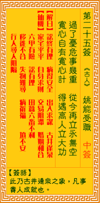

观音灵签第二十五签 【姚能受职】 |
 | |||
过了忧危事几重 从今再历永无凶 宽心自有宽心计 得遇高人护圣功 |
||||
| 【吉凶】 | 上中签 | 【宫位】 | 巳宫 | |
| 【签语】 | 此卦古井逢泉之象，凡事贵人成就也。 | |||
| 【解曰】 | 讼终有理 病得安全 出入求谋 古井逢泉 | |||
| 【仙机】 | 此签家宅平平，自身阻滞，求财阻滞，交易阻滞，婚姻和合，六甲有险，讼有理，行人寻人阻隔，田蚕六畜不利，移徙不合，失物难寻， 病祈福，坟不安。 | |||
| 【详解】 | 度过了担心危险的重重关卡，从此以后即使遇到也不会再有灾祸;放宽心顺其自然一定有因应之道，能遇高人相护顺利成功。 讼中有理，病得安痊，出外求望，枯井逢泉。凡事遇贵则吉。 君之签。是宽心自有宽心计。得遇高人-贵人也。方能护圣功。易言之。凡事遇贵人方能吉也。亦即能过了忧危第几重。从今再历永无凶之境。凡事谋略之时必守之。不宜盲目冲之。三思而后行。方不致吃大亏。是到头来讼中有理。病得安愈。出外求外。枯井逢泉者也。 此签有”有惊无险”之意。提醒当事人，勿自乱阵脚。遇事焦急于事无补，只会让自己更加慌乱、不知所以。应能保持镇静，仔细地思考应对之道。不管做任何决定，都必须以「理智」、「冷静」为前提考虑。在自己本身方面，坚守”施恩不求报、予人不追悔”的道理。然而面对他人的协助，则要铭记在心不可或忘。不论是替你解决了实际上的困难、或帮你解开心中疑惑的人，都应该要充满感激，有机会便加以报答。 | |||
| 【典故】 | 李广，汉朝名将，善骑射，以勇敢善战著称。汉文帝时，李广领军攻打匈奴，受了伤，被匈奴兵捉住，放在两匹马之间驱走。李广装死不 动，走了十多里路，李广觉察到有个匈奴兵骑匹好经过，即刻腾空而起，跳到匈奴兵骑马上，把他打倒，夺了他弓箭，策马扬鞭走了几十里，重集其军队，回营准备再攻打敌人。 《史记》 | |||